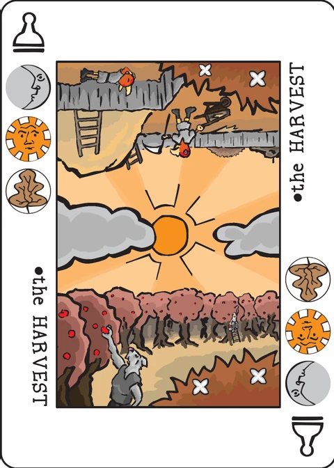

Colour Bazaar
the treacherous winds of fashion
The Isles of Purple and Red, renown for their fine fabric and vivid dyes, are far across the sea. When the island trading houses send cargo ships to the Sapphire Ports, they can only guess what the demand will be for different styles once the cargo finally arrives. So the houses send agents ahead in faster boats, on missions to promote the products the house anticipates sending. At the same time, they try to guess what will be in demand.
Each of the six Decktet suits represents a different colour or style of fabric. Players use cards to influence the value of each style and collect chips representing investment in particular styles. The goal is to have invested more in the styles that are ultimately the most popular.
Setup
Put the four Pawn cards in the middle of the table. Each represents a different fashion market in Sapphire.
Shuffle the basic deck and deal each player a hand of four cards.
The rest of the deck forms a draw pile; put it, along with the chips, somewhere so that every player can reach them.
The player wearing the most expensive clothing goes first. Subsequent play proceeds clockwise around the table.
Game play
On your turn, do each of the following in order:
- Influence fashion by playing a card.
- Invest in a style by taking a chip.
- Draw a card.
Influence fashion
Four stacks of cards will be built up over the course of play, each starting with a Pawn. You influence fashion is by adding a card to one of the stacks.
When you add a card, place it slightly offset so that players can see the cards further down in the stack.
You may only play a card onto a stack if the top card of the stack shares at least one suit with the card you are playing. Within that limit, you may choose to play any card from your hand onto any stack.
You may only play one card per turn.
If you have no cards which can be added to top of any of the stacks (because suits don't match) then you must choose one card from your hand and discard it. You still get to take a chip even if you are unable to play a card. You may not choose to discard if even just one of your cards could be legally played.
Take one chip of your choice
Your choice of chip is not restricted by the card that you played.
You may only pick from the available suits. This means that you may have no choice on your final turn.
Draw a card
After you draw, the player on your left takes the next turn.
If the draw pile is depleted, you don't get a card. Typically this will happen in the last couple of turns. Play still continues until one of the end game conditions is met.
The end of the game
The game ends after a player takes the last suit chip. Scores are then tabulated, and the high scoring player wins.
Scoring
To determine the value of a chip, look separately at each stack. Find the number card with that chip's suit on it that is closest to the top of the stack. The stack contributes the rank of that card to the value of the chip. Aces are treated as rank 1. Crowns are treated as having the value of the highest-ranked matching card in the stack. If there is no card of the suit in a stack, that stack contributes nothing.
The value of a chip is the total contribution of all four stacks. Your score is the total value of all your chips.
Example: At the end of the game, this is one of the four stacks (bottom to top): the Harvest (Pawn) — 7 of Waves and Daemons — 5 of Suns and Waves — Ace of Suns — 8 of Moons and Suns — 2 of Moons and Crowns — Crown of Moons.
This adds 8 to the value of Moons chips, because the Crown of Moons copies the highest-ranked moon card; 8 to the value of Suns chips, because the 8 is the sun closest to the top of the stack; 5 to the value of Waves chips; zero to the value of Leaves chips, because there are no leaves in the stack; 7 to the value of Daemons chips; 2 to the value of Crowns chips. The total value for each suit chip is determined by adding the value for this stack to the value for the other three stacks.
Shortcuts: Scoring at the end of the game involves more arithmetic than I can do in my head. We begin by calculating the value of each suit separately, and then adding up each player's score.
Since only the difference between player scores matters, the sums can be simplified. If all players have a chip of a given suit, each player can discard one of those chips without changing the relative scores. Also, you can reduce the value of chips by the value of the least valuable chip — for example: If Moons are the least valuable chip with a value per chip of 12, you can subtract 12 from the value of each chip. Moon chips are worth zero, and the other chips are worth smaller amounts. So adding up player scores is easier.
The extended deck
If you wish, you may add the Courts to the deck. I think they improve the game slightly but are not essential. If they are used in the three player game, then there are enough cards in the deck that players will still have four cards to choose from on their final turn.
Court cards represent the attention of the royal court, focussed on a specific market and style. You may play a Court in the usual way; the top card of the stack must share a suit with the Court card. When you do, name aloud one of the three suits on the Court card. On the very next turn, the player to your left must play a card of that suit on that stack if they can possibly do so. If they cannot, they must reveal their hand of cards. They must still play on that stack, if they have a card that matches the Court's other suits. They may play elsewhere only if they have no cards that can legally be played on the Court.
The Court has no further effect, and it does not affect scoring. Ignore Court cards at the end of the game for determining the value of each suit; score stacks as if the Court were not there.
Note on this implementation
Two players only: the wiki supports 2–3 players; this app plays exactly two, so the thirty suit chips (five per suit) make fifteen turns each. Player 1 simply starts; there is no expensive clothing to compare.
The Courts are not used: the wiki calls them optional and says they are "not essential", so this app plays the basic 36-card deck only and the Court pressure rule never applies. The four Pawns come from the extended deck as the untouched bases of the four markets; they never score.
Crown valuation: "Crowns are treated as having the value of the highest-ranked matching card in the stack" replaces the closest-to-the-top rule for that suit: a stack holding a Crown of a suit contributes its highest-ranked number card of that suit — and contributes nothing if no number card of that suit is in the stack.
The discard pile: forced discards go to a face-up discard pile that is never reshuffled; when the draw pile is empty you draw nothing, as the rules say.
Pass and play: this is a hidden-hand game, so the screen is covered by "Player N's turn" whenever the other player must take over. The end-game valuation is computed live on the pad as the stacks grow, and the final dialog shows the whole reckoning.
Credits
This is a game by P.D. Magnus. It was inspired by Ronald M. Corn's Buried Treasure and Reiner Knizia's Flinke Pinke. The Isles of Purple and Red are the brainchild of Bryan Keneally.
Playtesters included Cristyn Magnus, Chris DeLeo, John Milanese, Jeff Warrender, Dan Purdy, Kevin Warrender, Jason Mutford, Nate Straight, Greg James, and Jack Neal.
These rules are copied from the Colour Bazaar page of the Decktet wiki (page revision 20, 15 May 2019) so they can be read offline, under the wiki's CC BY-NC-SA 3.0 licence. Cards by P.D. Magnus, same licence. The wiki text names the suits by their older names — Wyrms are today's Daemons and Knots today's Crowns — which this copy silently updates.
Further reading: Colour Bazaar at BoardGameGeek, the introduction thread, a playtest review.